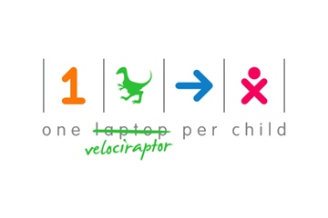

Hi! I'm Greg.
I'm fascinated by the Internet and trying to figure out how to use it to make your life better
I love creating things that take on a life of their own
I make robots
I'm an engineer because some awesome people taught me how to build robots in high school
Now I help run a website to support the FIRST Robotics community
I went to Olin College
You know, the 300 student engineering college outside Boston?
Olin taught me how the intersection of engineering, design, and entrepreneurship enables you to imagine what has never been and do whatever it takes to make it happen
I work at Facebook
I've always been interested in how technology mediates relationships, so now I'm building things to help you get more out of your life.
Projects I like to make stuff
-

The Blue Alliance
Started video site to support the FIRST Robotics Competition high-school STEM program. The Blue Alliance is a key part of the online FIRST community, with over 350,000 visits per year.
-
Socialbots 2008
At Olin College, built an autonomous network of social robots. Unsupervised, the bots convinced human users to follow them and emotionally reply to tweets.
Presented at SXSW 2011, MIT-Knight Civic Media 2012, and SXSW 2013
-

Off-Road Robot Car 2010
Designed and built off-road robotics research platform for my Olin capstone project. The robot followed GPS waypoints with half meter accuracy while avoiding obstacles using LIDAR. .
-

One Velociraptor per Child
Most of the nearly two billion children in the developing world have inadequate access to dinosaurs. Some receive no paleontology training at all. One in three has never even seen a dinosaur in person. The One Velociraptor Per Child project set out to fix this dire situation.
-

Biomimetic Fish Robot 2008
Worked with a team to design prototype several biomimetic swimming robots. One was this stingray, powered by a singed motor. The full design, fabrication, and assembly timeline was two weeks.

Twanslator 2009
Ever wish you spoke another language so you could have more followers in Europe? Now you can! Twanslator watches your tweets and automatically reposts them in a foreign language.
-
Yawnlog 2009
Yawnlog is a website to help you track your sleep. You may ask, "Why would I ever need a sleep tracker?" Maybe a better question is why wouldn't you need a sleep tracker?
Featured on ReadWrite.

Mural for Android 2009
Mural turned your Android phone's wallpaper into a social experience. Automatically post your phone's wallpaper to Facebook for your friends to see, and get suggestions from your friends for newer (better!) wallpapers than the one you have.
Weasley Clock 2010
You know that clock the Weasleys have in Harry Potter that points to where everyone in the family is? An Android phone, an Arduino, and a hobby servo gets you pretty darn close.